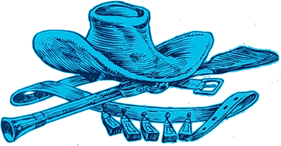
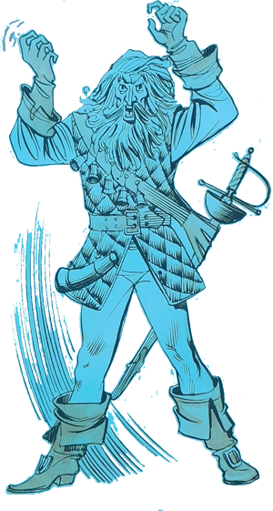
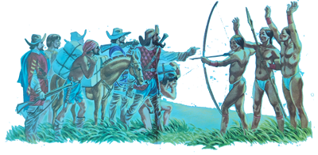
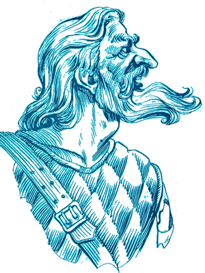
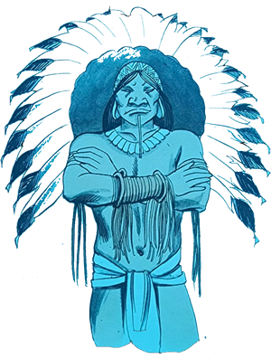
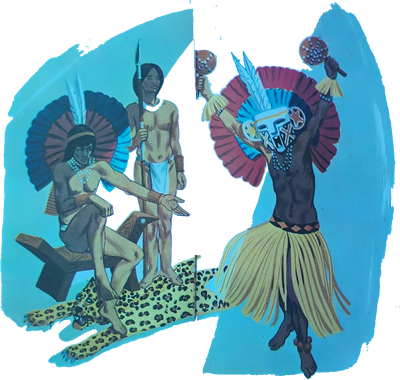
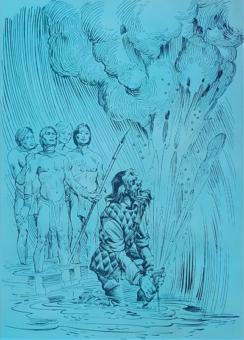
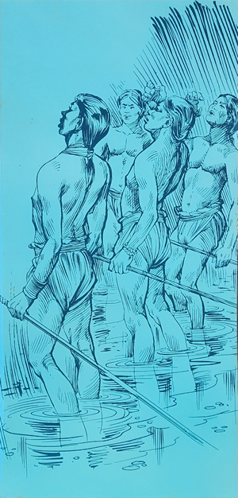

Deixando o Rio Grande do Sul, o Arrelia e seus amiguinhos seguiram para Minas Gerais. Pretendiam visitar várias cidades antigas e históricas desse Estado, sobre as quais tanto haviam ouvido falar.
Estavam passando por uma estreita rua colonial quando Jaci comentou:
- Que diferença entre este lugar e onde estivemos, não? Até parece outro país!
- É “verdaude” – respondeu o Arrelia. Costumes diferentes, belezas diferentes . . . Você disse bem. Nossa terra é tão grande que os Estados parecem verdadeiros países. Uma das maiores felicidades é a gente poder viajar e conhecer um país tão grande e importante.

Minas Gerais ocupa um lugar de destaque em nossa História. Já calcularam quantos grandes vultos viveram aqui? Tiradentes, o Aleijadinho, Tomás Antônio Gonzaga . . . A lista não teria fim. E é a terra de Santos Dumont, o homem que inventou o avião! Homens destemidos aventuraram-se por aqui em busca de ouro e pedras preciosas, como, por exemplo, Bartolomeu Bueno da Silva.
- O Anhanguera! O que pôs fogo na água! – completou Iberê o mais rápido que pode.
O Arrelia parou tão depressa de andar que as crianças avançaram vários passos antes de pararem também. Levantou a bengala e o chapéu e gritou:
- Não é possível! Eta menino “afiaudo”! Vamos dar um viva para ele!
Todos gritaram o mais alto que puderam, deixando o menino completamente encabulado, principalmente porque várias pessoas se haviam aproximado atraídas pelos gritos do Arrelia.
- Puxa, Arrelia! – reclamou o menino com o rosto em brasa. Era preciso fazer tanto escândalo? Você hoje cismou comigo.
- Mas que é isso? – estranhou o Arrelia, colocando o chapéu e baixando a bengala. Você merece um elogio e não quer aceitá-lo?
- Elogio está certo. Mas isso é elogio?
Continuaram a caminhar.
- Pois é – prosseguiu o Arrelia. Exatamente o Anhanguera.
- O que significa Anhanguera? – quis saber Carlinhos.
- É um nome índio. Significa Diabo Velho – esclareceu o Arrelia.
- O menino arregalou os olhos:
- Diabo? Ele era um diabo?
- Não, não era! Os índios acreditavam que sim!
- Ué. E por que?
- Porque ele pôs fogo na água.
- Pôs fogo na água? Então era mesmo um diabo!
- Não, Carlinhos. Os índios pensavam que ele havia posto fogo.
- Não entendo.
- Já vai entender. Foi na época em que os bandeirantes não mediam sacrifícios para encontrar ouro e pedras preciosas. Graças à coragem daqueles homens, o Brasil teve as suas fronteiras aumentadas. Não fossem eles e o nosso País não teria hoje o tamanho que tem.

Era grande o número de homens que penetravam no sertão desconhecido sem saberem o que encontrariam e se voltariam ou não. Entre eles estava Bartolomeu Bueno da Silva. Era conhecido por Feio, porque sua cara era mesmo de meter medo.
Quando ele resolveu deixar São Paulo e seguir para Minas Gerais com a intenção de encontrar ouro e pedras preciosas contava setenta anos de idade!
O que?! – admirou-se Jaci. Setenta anos? Meu avô tem esta idade e sente medo até de atravessar a rua!
O Arrelia tornou-se pensativo:
- Acho que naquele tempo os homens eram feitos de ferro. E tinham de ser. As pessoas se adaptam às circunstâncias. A época exigia força e coragem. Hoje é diferente. Já não é preciso lutar como eles lutavam. Hoje, a inteligência e a cultura ocupam o primeiro lugar. É um outro tipo de luta. Um homem de setenta anos não tem mais necessidade de fazer o que os bandeirantes faziam.
Mas voltando à estória, Bartolomeu Feio, como era “chamaudo”, chegou à Minas Gerais, e a custo de muito esforço conseguiu apossar-se de inúmeras minas de ouro. Travou-se então a Guerra dos Emboabas e ele lutou contra os portugueses e brasileiros que eram amigos daqueles. Vocês sabem o que foi a Guerra dos Emboabas?
- Eu si – respondeu Iberê.
O Arrelia olhou-o assustado:
- Mas não é possível! Está demais! Esse menino deve ter comido alguns livros hoje.
Depois pediu a Iberê que falasse aos outros sobre a Guerra dos Emboabas. O menino começou:
- Os bandeirantes paulistas achavam que as minas eram deles já que haviam sido os descobridores e exploradores delas. Os portugueses, porém, como o Brasil era colônia lusitana, achavam que o verdadeiro dono das minas era o rei de Portugal. Por causa disto surgiram diversas lutas entre os paulistas e os emboabas, que eram portugueses e alguns brasileiros de outras procedências, que os ajudavam.
- Isso mesmo – aplaudiu o Arrelia. Muito bem – e retornou a narração:
- Depois que a guerra terminou, Bartolomeu achou melhor deixar Minas Gerais porque sua presença ali poderia provocar nova luta. Muito se falava na existência de uma grande mina de ouro, chamada Mina dos Martírios, em Goiás, e ele resolveu encontrá-la. Organizou uma importante expedição e partiu para o desconhecido.

Não foi “nauda” fácil chegar lá. Encontraram inúmeros rios que tiveram de atravessar e desafiantes serras que foram obrigados a transpor. E havia ainda as feras, as cobras e os mosquitos, Ele, porém, não parava diante de nada. Sua coragem animava os que o acompanhavam e assim conseguiram chegar ao sertão de Goiás, onde diziam existir a fabulosa mina de ouro.
Bartolomeu já se sentia vencedor quando deu com um grupo de índios que não o deixaram passar.
Um deles perguntou-lhe:
- O que veio fazer aqui? O que pretende?
- Estou procurando a Mina dos Martírios. Quero saber se fica nesta região.
O índio disse que havia muitas minas nas suas terras. Ele pediu que o deixassem passar mas não adiantou nada. Os selvagens não permitiam de nenhum modo a entrada de brancos nos seus domínios.
Bartolomeu acampou ali perto e ficou pensando de que forma poderia passar. Desistir de encontrar a mina é que não podia. Depois de tanto sacrifício! Teve a ideia de usar de força mas o grande número de índios, muito superior ao de sua gente, não os animou. Seriam derrotados facilmente pelos selvagens. Foi ficando por ali, na esperança de encontrar um modo de realizar o seu desejo.

- Olhe, Arrelia – disse Carlinhos. Se eu estivesse no lugar dele, sei o que faria!
O Arrelia ficou uns momentos piscando a olhar para o menino. Depois lhe perguntou:
- “Verdaude”? Vamos ver então qual a solução que você encontrou.
Carlinhos tomou um ar de falsa modéstia e esclareceu:
- Sem que percebessem, eu me disfarçava de índio e me misturava com eles.
O Arrelia até se entortou de tanto rir. As outras crianças logo entenderam o motivo e também caíram na gargalhada.
Carlinhos, agora de cara fechada, quis saber:
- Por que tanto barulho? Não vejo nada de engraçado na minha ideia. Posso saber por que estão rindo?
O Arrelia desejava explicar mas não o conseguia. O acesso de riso não o deixava falar. Carlinhos olhava para um e para outro e repetia a pergunta. Nenhuma resposta. Por fim, com muito sacrifício, o Arrelia explicou-lhe o motivo das risadas:
- Você é mesmo inocente! Não acha que é muito escurinho para passar por índio? Já imaginou? Seria mais fácil uma tartaruga passar por onça! – e começou a rir outra vez.
Carlinhos ficou pensativo. Após uns instantes, falou, mais para si do que para os outros:
- É mesmo! Eu não tinha pensado nisso! Acho que eu não dava um índio muito perfeito, não.
- É claro! – confirmou o Arrelia. Você seria agarrado logo no primeiro passo! Pensando bem, talvez os índios morressem de tanto dar risada! Bom, vamos continuar a estória senão quem acaba morrendo de rir somos nós!
Bartolomeu lembrou-se do episódio acontecido com Diogo Álvares Correia, o Caramuru: dando um tiro de espingarda, que os índios não sabiam o que era, conseguiu amedrontá-los e escapar de ser morto por eles. Por causa disto recebeu o apelido de Caramuru, que quer dizer Homem do Trovão. Ah! se pudesse fazer o mesmo!
- E por que não? – perguntou Jaci. Ele não possuía espingarda?
- Possuía, mas acontece que aqueles índios já haviam tido outros encontros com brancos e conheciam a espingarda – esclareceu o Arrelia. Portanto . . .
Ele pensou, pensou e teve uma ideia. Já sabia o que fazer para amedrontar os índios. Chamou os que estavam ali e disse-lhes:
- Ou vocês me deixam passar e procurar a Mina dos Martírios ou então porei fogo em todas as águas daqui. Secarei as lagoas e os rios, e vocês morrerão de sede!
- E ele podia mesmo secar as águas? – interrogou Marisa.
- Não, Marisa – respondeu o Arrelia. Mas havia descoberto um meio de fazê-los acreditar que sim.

- E qual era esse meio? – perguntou a menina com curiosidade.
- Espere um pouco e logo saberá – pediu o Arrelia e prosseguiu:
- Bartolomeu ameaçou os índios e deu-lhes um prazo para que resolvessem se o deixavam ou não passar:
- Se até amanhã cedo vocês não me houverem dado permissão para eu passar e indicado onde fica a mina que procuro, porei fogo na água.
Uns índios ficaram um pouco assustados. Outros tomaram um ar de riso e seguiram todos para a aldeia a fim de contar ao cacique o que haviam ouvido.
A ameaça do bandeirante causou uma confusão “daqueulas”. Alguns índios achavam que era mentira. Outros não queriam facilitar e preferiam fazer a vontade de Bartolomeu Bueno.
Um deles disse ao cacique:
- Não sabemos se o branco tem ou não tal poder. Já pensou o que será de nós se ele o tiver? Secará nossas lagoas e nossos rios! O que faremos sem água? Morreremos todos de sede!

O cacique pôs a mão no queixo e ficou pensando, preocupado. Aí outro índio dirigiu-se a ele:
- O branco quer apenas amedrontar-nos! Não é possível que possua tão grande poder! Tupã não o concederia a nenhum ser humano!
O Cacique continuou quieto, pensando. O primeiro índio voltou a falar:
- O branco parece ter certeza. Acho que possui o poder que diz possuir.
Depois de algum tempo o cacique ordenou:
- Tragam o pajé. Sendo feiticeiro, ele saberá se o branco tem ou não o poder de queimar nossa água.
Alguns índios foram buscar o pajé e ele veio andando devagar, com um ar sério, como convinha a um homem com aquele cargo.
O cacique contou-lhe o que estava ocorrendo e pediu-lhe:

- Diga-me, pajé, se ele pode mesmo cumprir a ameaça. Se disser que sim, deixaremos que passe com os seus homens e lhe mostraremos onde existe ouro.
O pajé ouviu com toda a atenção e pôs-se a meditar. Não se ouvia um ruído. Todos aguardavam em silêncio. Por fim o feiticeiro da tribo falou:
- O branco está mentindo. Jamais conseguirá secar a nossa água. Tupã deu este poder a ninguém. Se ele quisesse concedê-lo a alguém, teria escolhido a mim, a quem afinal já deu tantos poderes.
O cacique sorriu e disse bem alto:
- A preocupação estava absorvendo minha alegria como a abelha suga o mel de uma flor. Mas as palavras sábias do pajé espantaram-na para longe e voltei a sentir-me feliz.
O pajé quase estourou de orgulho. O cacique dirigiu-se aos índios:
- Ouviram o que ele disse. Nada há a temer. O branco não passa de um aventureiro e não merece nossa atenção. Terá o nosso desprezo e ficará sem resposta.
Tanto os índios que não tinham acreditado como os que haviam ficado receosos começaram a dar pulos de alegria. Pois tudo o que o pajé dizia não era certo?
No acampamento, o bandeirante contava as horas ansiosamente. Nem dormiu direito de tão “preocupaudo” que estava. Mais preocupados estavam os homens de sua expedição, pois não sabiam de que modo o seu chefe ia cumprir o prometido.
Mal as primeiras luzes do Sol surgiram no horizonte, Bartolomeu levantou-se e ficou olhando o caminho que vinha da aldeia dos índios. O prazo estava-se esgotando. Os outros também se levantaram e ficaram na expectativa.
O tempo foi passando e nenhum índio apareceu. Bartolomeu viu que era mesmo necessário pôr fogo na água para assustá-los. Chamou dois dos homens que o acompanhavam e ordenou-lhes:

- Vão até a aldeia e digam àqueles índios que o prazo se esgotou. Se eles não concordam em deixar-nos passar, serei obrigado a queimar a água. Eles que venham aqui para ver se posso ou não cumprir o que disse.
Os dois homens ficaram um pouco assustados olhando o chefe para ver se estava brincando. Mas sua cara dizia que não e eles tomaram a direção da aldeia.
Os índios lhe disseram que de nenhum modo permitiriam a passagem dos brancos. Os enviados pediram então que alguns índios os acompanhassem a fim de verem o bandeirante cumprir a promessa. O cacique achou que era a oportunidade de desmascarar Bartolomeu e mandou que alguns índios acompanhassem os mensageiros.
Bartolomeu havia enchido uma guampa com pólvora e, encostando-a à água, pôs-lhe fogo. Os índios tiveram a impressão de que o fogo vinha de dentro da água e ficaram horrorizados. Uns caíram de joelhos, alguns se esconderam no mato e os outros correram para a aldeia.
O cacique, ao saber do acontecido, veio pessoalmente pedir ao bandeirante que não secasse a água e deu-lhe permissão para passar com sua gente. Agora os índios viam nele um ser sobrenatural, digno de todo o respeito, e deram-lhe o apelido de Anhanguera que, como eu disse, significa Diabo Velho.
Diz a estória que mesmo com a ajuda dos índios ele não conseguiu achar a Mina dos Martírios. Em compensação, encontrou outras minas e ficou riquíssimo.
- E o que aconteceu ao pajé? – perguntou Sérgio.
- Isso não sei – respondeu o Arrelia. Mas coisa boa é que não foi.